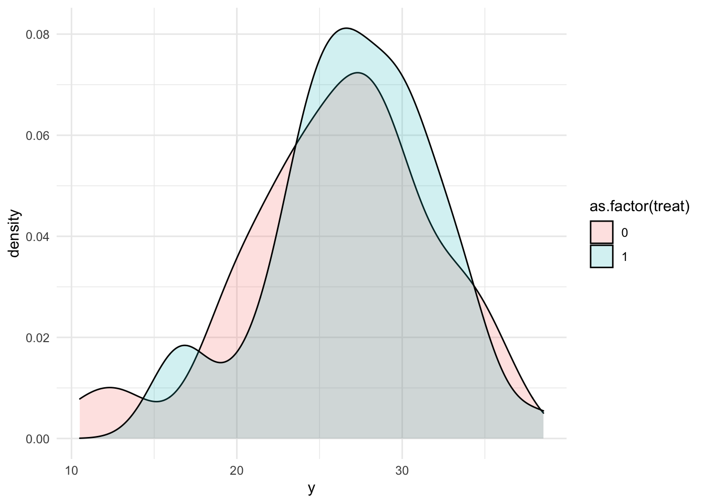
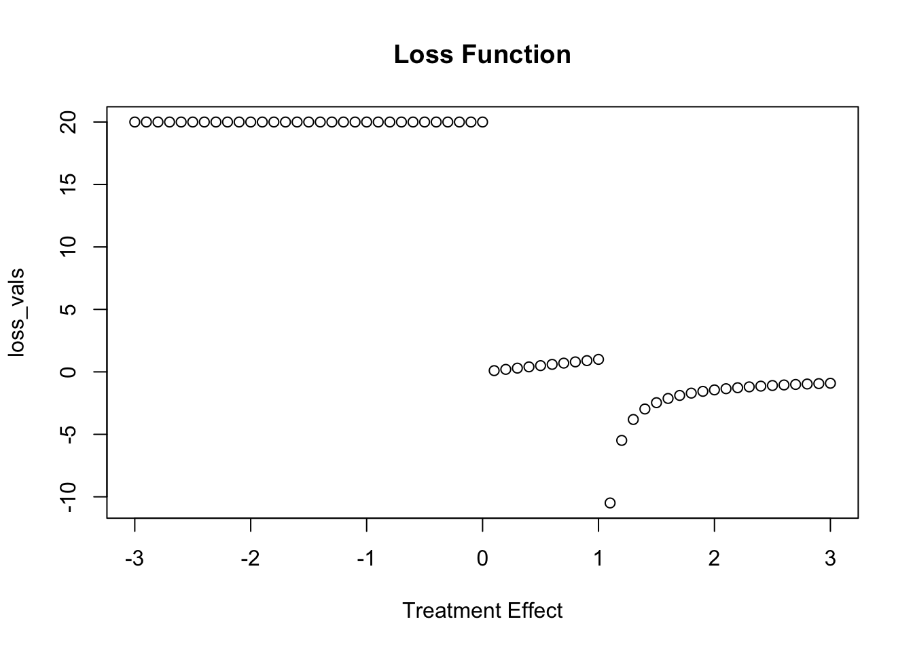
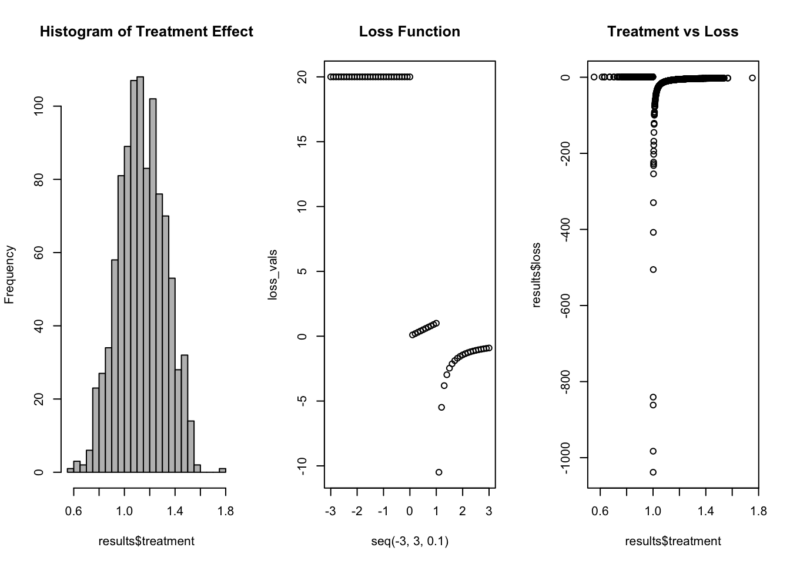

![]()
set.seed(42)
n <- 100L # Participants
x <- rnorm(n, 5, 1)
treat <- rep(c(0,1), n/2) # Half Receive
treat_effect <- 1
beta_1 <- 5
alpha <- 1
y <- rnorm(n, x * beta_1 + treat_effect * treat + alpha)Always Be Integrating Over Your Loss Function
This is a line that I heard and saw from a talk that James Savage at an NYC R Conference1 in which he discussed the importance of integrating over your loss function. I think that this is an infinitely important topic. Statisticians, myself included, often marvel over the the most parsimonious model with the highest explained variance or best predictive power. Additionally, when it comes to assessment and verifying the impact of an intervention, ensuring that one has accounted for as many of the confounding factors is important for uncovering the LATE or ATE (depending on the context).
However, each of these approaches leaves out of the most important parts of the equation: the practical implications of the error. We live in a world that is messy. People are multitudes and not all things that count can be counted and included in a model. Additionally, we may find that some of our interventions aren’t slam dunks. For example a treatment effect may only be positive only 75% of the time. What does that mean for policy? Should we scrap the program because we didn’t reach the almighty 95% threshold?2
Enter the Loss Function
Loss functions allow us to quantify the cost of doing something. What is lost opportunity for pursuing a given outcome and how does this relate to the value generated by the given intervention.3 While this also takes some time to think through and generate, representing the impact through a loss function is a great exercise.
Bayesian inference provides a great way to marry our loss function with our model of the intervention. With Bayesian inference, we have the wonderful ability to draw from our posterior distribution. These draws represent the distribution around our intervention effect. By evaluating the loss function at these draws we can then generate a distribution of our potential losses. You can then integrate over these losses and see what the net loss would be. If it is favorable, then by definition it is a good approach and one that minimizes loss.
The Advantage
With Bayesian modeling you can introduce subjective knowledge through priors. This allows for powerful modeling in the presence of smaller samples and noiser effects. Additionally, because parameters are interpretted and random values, we can speak in terms of distributions. By drawing from these posteriors and evaluating our loss function, we capture the “many worlds” of the intervention and provide a much clearer picture of the loss.
A Trivial Example
Here I am going to step through a simple example. This is a little trivial, but it will illustrate Bayesian inference, loss function generation, and evaluation.
Data Generating Process
As always we start with a data generating process. Let’s assume that we are measuring the effect of some intervention \(\tau\) in the presence of a confounder, \(x\) and some response \(y\), with normally distributed errors. Mathematically we can write this as:
\[y \sim N(\alpha+\beta_1x_i+\tau, \sigma^2)\]
Generate Fake Data
Now that we have a model for the above DGP, we can generate some fake data in R.
Now we have our fake data following our DGP above. From the Density we don’t really see too much of a shift.
tibble(x, treat, y) %>%
ggplot(aes(y, fill = as.factor(treat)))+
geom_density(alpha = .2)
Building Our Loss Function
Now we can build our loss function. This is a bit contrite, but it indicates that if the treatment effect is zero or non-zero there is a penalty of 20.
my_loss <- function(x){
if(x > 1){
-1/log(x)
} else if (x >0 ) {
x
}else{
20
}
}I always find it is a little easier to graph these things:
loss_vals <- map_dbl(seq(-3,3,.1), my_loss)
plot(seq(-3,3,.1), loss_vals, main = "Loss Function", xlab = "Treatment Effect")
Building The Model in Stan
Now we can build our model in Stan using rstan. I will add a function that will echo the loss function specified above. On each draw it will calculate our loss.
functions{
/**
* loss_function
*
* @param x a vector of outputed values
*/
real loss_function(real x){
//Build output vector
real output;
if(x>1)
output = -1/log(x);
else if (x > 0 )
output = x;
else
output = 20;
return output;
}
}
data {
int<lower=0> N;
vector[N] x;
vector[N] status;
vector[N] y;
}
// The parameters accepted by the model. Our model
// accepts two parameters 'mu' and 'sigma'.
parameters {
real alpha;
real beta;
real treatment;
real<lower=0> sigma;
}
// The model to be estimated. We model the output
// 'y' to be normally distributed with mean 'mu'
// and standard deviation 'sigma'.
model {
y ~ normal(alpha + beta * x + treatment * status, sigma);
}
generated quantities{
real loss = loss_function(treatment);
}Then we can format our data for stan.
stan_dat <- list(
N = n,
x = x,
y = y,
status = treat
)And then we can run our model:
fit1 <- sampling(reg_analysis, data = stan_dat,
chains = 2, iter = 1000, refresh = 0)Here we would normally do some diagnosistics, but we know that we have properly captured the model, so I will skip this step.
Make Our Inferences
Now let’s look at our parameter estimates. Everything looks good and we were able to capture our original parameter values.
print(fit1)Inference for Stan model: anon_model.
2 chains, each with iter=1000; warmup=500; thin=1;
post-warmup draws per chain=500, total post-warmup draws=1000.
mean se_mean sd 2.5% 25% 50% 75% 97.5% n_eff Rhat
alpha 0.70 0.02 0.48 -0.26 0.39 0.69 1.02 1.65 585 1.01
beta 5.03 0.00 0.09 4.85 4.97 5.03 5.09 5.21 618 1.01
treatment 1.14 0.01 0.18 0.78 1.01 1.13 1.27 1.48 642 1.00
sigma 0.93 0.00 0.07 0.80 0.88 0.92 0.97 1.09 559 1.00
loss -14.39 2.14 66.72 -77.09 -8.54 -4.34 -2.44 0.99 972 1.00
lp__ -41.31 0.08 1.46 -45.22 -41.98 -41.00 -40.24 -39.45 372 1.01
Samples were drawn using NUTS(diag_e) at Wed Jun 1 13:10:12 2022.
For each parameter, n_eff is a crude measure of effective sample size,
and Rhat is the potential scale reduction factor on split chains (at
convergence, Rhat=1).Now more importantly, lets pull out our treatment effect and loss values:
results <- data.frame(
treat <-fit1 %>%
extract("treatment") %>%
as.vector(),
loss <- fit1 %>%
extract("loss") %>%
as.vector()
)Integrating Over Our Loss Function
Here we can summarise our estimated treatment effect and its associated distribution, recall our loss function, and then examine our loss function evaluated at our values of treatment effect.
par(mfrow = c(1,3))
hist(results$treatment, main = "Histogram of Treatment Effect", col = "grey", breaks = 30)
plot(seq(-3, 3, .1), loss_vals, main = "Loss Function")
plot(x = results$treatment, y = results$loss, main = "Treatment vs Loss")
Finally, we can sum our evaluted loss function and see where we land:
sum(results$loss)[1] -14390.76What does it mean? Based on our loss function and treatment effect, it has a negative loss. So it is a slam dunk!
Footnotes
Here you can take this as 95% confidence intervals, 95% credible intervals, whatever you choose. Richard McElreath has some interesting/ funny criticisms of vestiges of our digits (literally ten fingers).↩︎
In the case of prediction problems this could be the penalty for a false positive or conversely penalties for false negatives.↩︎
Reuse
Citation
BibTeX citation:
@online{dewitt2019,
author = {Michael DeWitt},
title = {Integrating {Over} {Your} {Loss} {Function}},
date = {2019-09-18},
url = {https://michaeldewittjr.com/programming/2019-09-18-integrating-over-your-loss-function},
langid = {en}
}
For attribution, please cite this work as:
Michael DeWitt. 2019. “Integrating Over Your Loss
Function.” September 18, 2019. https://michaeldewittjr.com/programming/2019-09-18-integrating-over-your-loss-function.